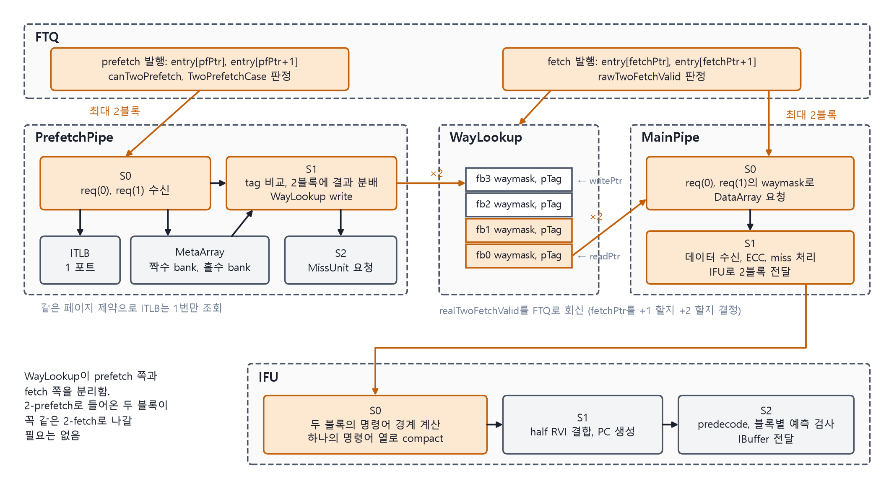
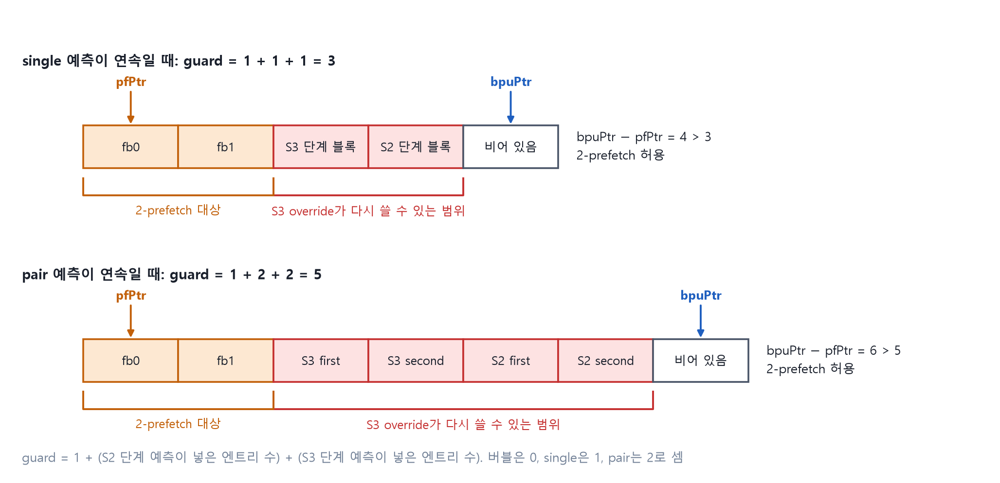
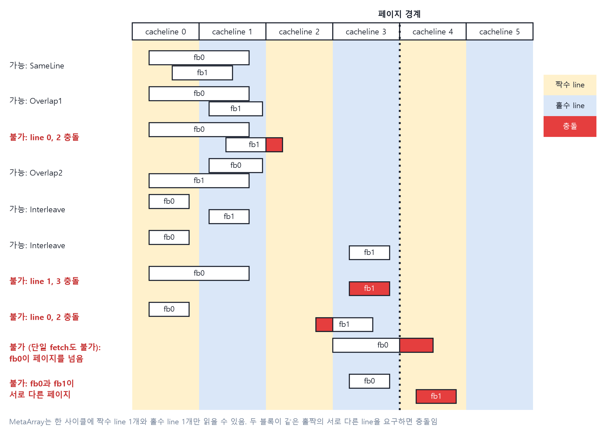
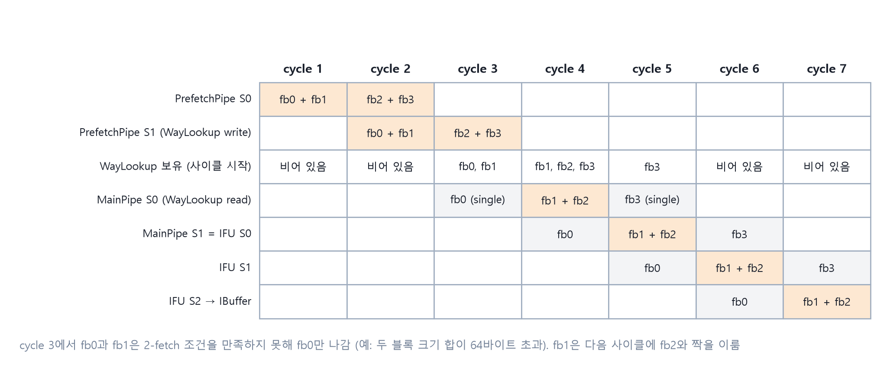

5장 · 2-fetch: 캐시와 IFU가 블록 두 개를 한 번에 다루기
이 장은 upstream의 2-fetch 구현을 기반으로 하고, 2-taken과 함께 쓰기 위한 수정을 더한 상태를 설명한다. 용어는 upstream ICache 설계 문서(V3)와 같다.
이 장에서 배우는 것
- 2-prefetch와 2-fetch가 왜 다른 것인지, 무엇이 둘을 분리하는지 설명할 수 있다.
- 안전거리 guard의 값을 직접 계산하고, 그것이 ICache와 IFU의 flush 검사를 단순하게 만드는 이유를 말할 수 있다.
- 두 블록이 MetaArray 두 포트에 들어맞는 경우와 그렇지 않은 경우를 판정할 수 있다.
5.1 prefetch 둘과 fetch 둘은 다른 것이다
- 2-prefetch. PrefetchPipe가 한 요청으로 블록 2개의 waymask를 구해 WayLookup에 넣는다.
- 2-fetch. MainPipe와 IFU가 한 요청으로 블록 2개의 명령어를 가져온다.
둘은 WayLookup으로 분리되어 있다. 2-prefetch로 함께 들어간 두 블록이 꼭 같은 2-fetch로 나올 필요는 없다. 반대로 따로 들어간 두 블록이 한 2-fetch로 나올 수도 있다.

그림 5-1. 2-prefetch와 2-fetch의 경로. WayLookup이 둘 사이의 완충이다.
5.2 FTQ는 언제 두 개를 내보내는가
2-prefetch 조건
- bpuPtr와 pfPtr의 거리가 안전거리 guard보다 크다.
- 두 블록이 같은 페이지에 있다. ITLB 포트를 하나만 쓰기 위함이다.
- 두 블록 모두 backend가 알려 준 예외 대상이 아니다.
- MetaArray 포트 충돌이 없다(5.3).
2-fetch 조건
- bpuPtr와 fetchPtr의 거리가 guard보다 크다.
- 두 블록의 크기 합이 64바이트 이하다. IFU가 한 번에 다루는 명령어 열의 크기 제한이다.
- 두 블록이 같은 페이지에 있다.
- 두 블록 모두 backend 예외 대상이 아니다.
실험 5 · 안전거리 guard를 계산하기

그림 5-2. 안전거리 guard. 두 번째 블록이 S3 override 범위 밖에 있을 때만 2개를 내보낸다.
문제는 이것이다. BPU S3 override는 이미 FTQ에 들어간 엔트리를 다시 쓸 수 있다. 다시 쓰일 수 있는 엔트리를 두 번째 블록으로 내보내면 ICache와 IFU에서 "두 번째 블록만 취소"하는 처리가 필요해진다. 이를 피하려고 두 번째 블록이 override 범위 밖에 있을 때만 2개를 내보낸다.
설명용 모델. S2와 S3에 있는 예측이 FTQ에 넣은 엔트리 수를 각각 센다. 버블은 0, single은 1, pair는 2다.
guard = 1 + (S2 단계 예측이 넣은 엔트리 수) + (S3 단계 예측이 넣은 엔트리 수)
| S2에 있는 것 | S3에 있는 것 | guard |
|---|---|---|
| 버블 | 버블 | 1 |
| single | single | 3 |
| pair | single | 4 |
| pair | pair | 5 |
해 볼 것. bpuPtr − fetchPtr가 4일 때 각 행에서 2-fetch가 가능한지 판정해 보자. 거리가 guard보다 커야 하므로 첫 세 행은 가능하고 마지막 행은 불가능하다. pair가 연속이면 2-fetch 기회가 줄어든다. 6.1에서 다시 본다.
이 보장 덕분에 ICache와 IFU의 BPU flush 검사는 첫 번째 블록의 ftqIdx만 본다. 두 번째 블록은 override 대상이 될 수 없기 때문이다.
5.3 MetaArray 두 포트에 두 블록을 끼워 넣기
MetaArray는 set 인덱스의 짝수 bank와 홀수 bank로 나뉘어 있고 한 사이클에 각각 1개 line을 읽는다. 두 블록이 읽어야 할 line이 이 두 포트에 들어맞을 때만 2-prefetch가 가능하다.

그림 5-3. 2-prefetch가 가능한 경우와 불가한 경우. 아래 두 행은 페이지 경계 제약이다.
실험 6 · 두 블록이 포트에 들어맞는가
설명용 모델. line은 64바이트, set 인덱스는 line 주소의 하위 비트라고 놓는다. 블록이 line 경계를 넘으면 연속한 line 두 개를 읽어야 하고, 연속한 두 line은 항상 홀짝이 다르다.
| 경우 | 조건 | 읽는 line |
|---|---|---|
| SameLine | 두 블록의 첫 line이 같다 | 그 line과 다음 line |
| Overlap1 | fb0이 line을 넘고, fb1이 그 다음 line 안에 있다 | fb0의 두 line |
| Overlap2 | fb1이 line을 넘고, fb0이 그 다음 line 안에 있다 | fb1의 두 line |
| Interleave | 둘 다 line을 넘지 않고, set 인덱스의 홀짝이 다르다 | 각자의 line |
| Conflict | 위에 해당하지 않는다 | fb0만 single prefetch |
해 볼 것. fb0이 line 10 안에 있고 fb1이 line 12 안에 있다고 하자. 둘 다 짝수다. Interleave가 아니고 다른 경우에도 해당하지 않으므로 Conflict다. fb1을 line 13으로 옮기면 Interleave가 된다. 이제 fb0을 line 10과 11에 걸치게 하고 fb1을 line 11 안에 두자. Overlap1이다. fb0이 읽는 두 line에 fb1이 이미 들어 있다.
PrefetchPipe S1은 두 포트의 읽기 결과를 경우에 맞게 두 블록에 나눠 준다.
5.4 WayLookup과 MainPipe
WayLookup write. 2-prefetch면 한 사이클에 엔트리 2개를 쓴다. 두 번째 포트는 첫 번째 포트와 함께만 동작한다.
WayLookup read. fetch 요청이 오면 앞의 두 엔트리를 보고 실제로 2개를 내보낼지 정한다.
- FTQ가 두 번째 블록을 유효로 보냈다.
- WayLookup에 엔트리가 2개 이상 있고 갱신 중이 아니다.
- DataArray 읽기 충돌이 없다. 같은 bank의 같은 way를 서로 다른 set으로 읽는 경우가 충돌이다.
- 두 블록 모두 MMIO가 아니고 ITLB 예외가 없다.
결정 결과는 FTQ로 돌아가 fetchPtr를 1 올릴지 2 올릴지 정한다. FTQ가 제안하고 WayLookup이 확정하는 구조다.
MainPipe. req(0)과 req(1)을 함께 처리해 IFU로 넘긴다. ITLB, PMP, ECC 예외는 블록별로 따로 표시한다. ITLB 예외가 난 2-prefetch는 WayLookup의 두 엔트리 모두에 예외 표시가 붙는다. 6.4의 hang 사례가 이 두 문장과 관련이 있다.

그림 5-4. 2-prefetch에서 2-fetch까지의 사이클 타이밍.
5.5 IFU는 두 블록을 하나의 열로 만든다
S0에서 두 블록의 명령어 경계를 한 번에 계산하고, 유효 명령어를 하나의 열로 모은다. 각 명령어는 어느 블록 소속인지 표시를 가진다.
다음 경우에는 두 번째 블록을 S0에서 버린다.
- 첫 번째 블록의 taken 위치가 명령어 중간에 떨어진다. 예측이 틀린 경우다.
- 두 번째 블록에만 ICache 예외가 있다. 이 블록은 redirect로 혼자 다시 fetch되어 첫 번째 블록 자리에서 예외를 보고한다.
S2의 predecode 검사는 블록별로 수행한다. 어느 블록에서 틀렸는지에 따라 redirect의 ftqIdx가 정해진다.
5.6 flush 직후에는 어떻게 움직이는가
- backend redirect와 predecode redirect. 파이프라인과 WayLookup을 모두 비운다.
- BPU S3 override. 첫 번째 블록의 ftqIdx로만 판정한다. WayLookup은 맨 뒤 엔트리 1개만 되돌린다. 5.2의 guard가 두 번째 블록이 대상이 되지 않음을 보장한다.
- bypass. redirect 다음 사이클에는 BPU의 재예측을 기다리지 않고 redirect target을 바로 prefetch한다. 이때는 반드시 single prefetch로 보낸다. 엔트리 크기를 아직 모르므로 line을 넘는다고 가정한다.
핵심 정리
- 2-prefetch와 2-fetch는 WayLookup으로 분리된 별개의 결정이다.
- guard는 "S3 override가 되감을 수 있는 범위"다. 두 번째 블록을 그 밖에 둠으로써 ICache와 IFU는 첫 블록의 ftqIdx만 검사한다.
- 2-prefetch는 MetaArray 홀짝 두 포트에 두 블록의 line이 들어맞을 때만 된다. 다섯 경우 중 Conflict만 single로 떨어진다.
- 2-fetch의 최종 결정은 WayLookup이 한다. FTQ는 제안만 한다.
- IFU는 두 블록을 한 열로 합치고, 검사와 예외는 블록별로 한다.
확인 퀴즈
- 2-prefetch로 함께 들어간 두 블록이 2-fetch에서 갈라질 수 있는 이유는?
- redirect 직후의 bypass prefetch를 single로만 보내는 이유는?
- guard 공식에서 맨 앞의 1은 무엇을 뜻하는가?
답
- 둘 사이에 WayLookup FIFO가 있고, 2-fetch 조건(크기 합 64바이트, DataArray 충돌, MMIO)은 2-prefetch 조건과 다르다.
- 그 시점에는 엔트리 크기를 모른다. line을 넘는다고 가정해야 하므로 두 포트를 한 블록이 다 쓴다.
- 지금 S1에서 쓰이고 있는 엔트리 자리다. S2, S3이 넣은 수에 그 1을 더한 범위가 override가 건드릴 수 있는 범위다.